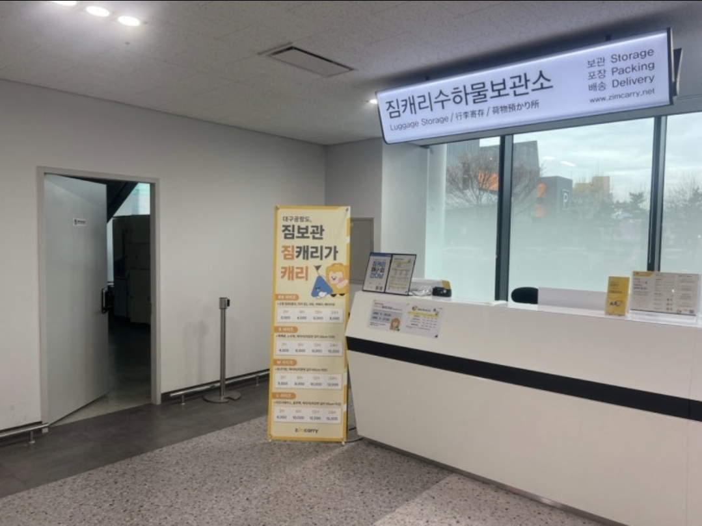
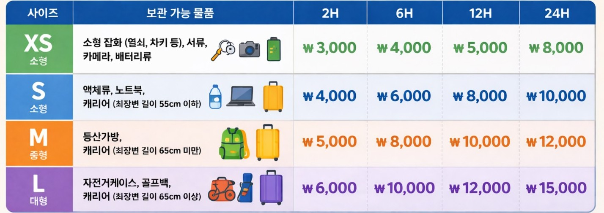

국제선 보안검색 안내 ✈️
탑승시간이 임박한 경우 보관소 이용이 어려울 수 있습니다.
여유시간을 꼭 확인하세요.
사설 보관소는 국내선 청사에 위치하고 있습니다.
왕복 약 20분의 이동시간이 소요될 수 있으므로,
탑승시간 1시간 전까지 보관소를 이용하시길 권장드립니다.

국내선 1층 GATE2 출입구 옆에
위치하고 있습니다.
• 보관서비스는 유료입니다.
• 운영시간 : 05:00 ~ 20:00
• 이용요금은 보관소 기준으로 적용됩니다.
• 정확한 보관 정보는 현장에서 확인해 주시기 바랍니다.

물품 크기와 보관 시간에 따라 이용요금이 달라질 수 있습니다.
보안검색요원에게 안내 요청
① 국내선 1층 보관소 이동
↓
② 사이즈와 보관일수에 따른 금액 확인 후 보관
↓
③ 출발장 재진입
↓
④ 보안검색 다시 받기